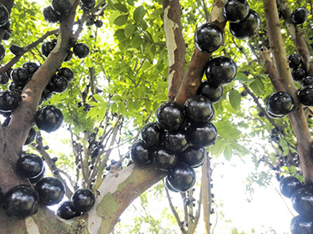
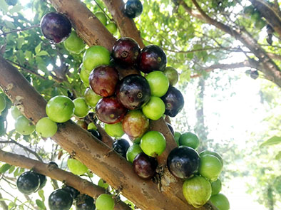

智慧果
長在樹幹上的智慧果
長相似蘋果，味道似蘋果，名字似蘋果，卻不是蘋果。披著紅色外衣的甚麼神秘的水果呢？答案是智慧果！智慧果(SMART APPLE)，除了有人叫它「蘋果」、「平波」，有一個非常美麗的別名──智慧果，是遠從中亞而來的亞熱帶水果。

古老的傳說~禁果
在聖經裡，有著一個美麗傳說。
伊甸園「知善惡樹」有顆長像智慧果的樹，
上帝創造了亞當與夏娃，把他們放在伊甸園裡，上帝對亞當及夏娃說:樹上的果子都可以吃，唯「知善惡樹」的果子「不可吃」，否則他們便會死。然而亞當夏娃被一條由魔鬼化身的蛇慫恿，吃了下去
雖然沒事，但上帝很生氣，把他們趕出去了。

嘉賓果樹成長的特色
嘉賓果最特別的地方就是「幹生花」，花與果實都是長在樹幹上的，嘉賓果開花時，整株樹幹開滿白色的小花，其壯麗不輸櫻花盛開的美景。花謝後，嘉賓果的果實就在樹幹上生長，像吹氣球一樣慢慢長大，還沒成熟時，翠綠色的果實很耀眼，但皮很厚籽很大顆；當樹葡萄慢慢成熟時，由綠轉紫，皮也慢慢變薄，籽越來越小顆，可以小到跟葡萄籽一樣，而且會非常甜。
資料來源: